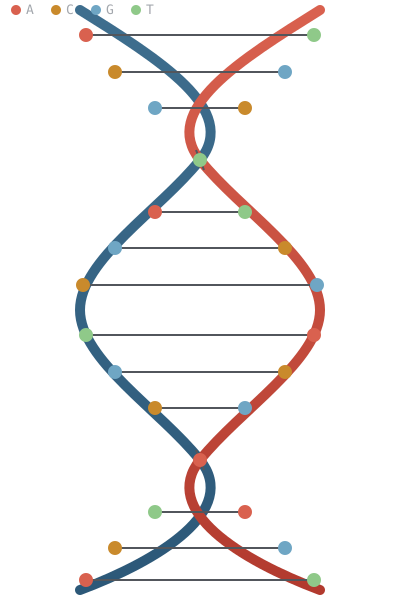

MDC Platform
A server that stores AI models, images, documents, and ordinary database tables side by side — queried entirely in plain sentences. No SELECT, no JOIN, nothing your support team needs to be trained on before they can get an answer out of it.
Features at a glance
| Feature | What you get | |
|---|---|---|
| Plain-sentence data | Create, read, update, delete and analyse by asking; ambiguity is clarified, deletes are confirmed, no SQL is ever generated | more |
| Object store | Any bytes - AI models, images, documents, logs, tensors, tables - classified by content and tiered HOT / WARM / COLD / ARCHIVE | more |
| AI model storage | .safetensors parsed; every tensor stored and tiered on its own; fetch one layer without the rest | more |
| DNA-inspired archive | ARCHIVE tier: AES-256-GCM first, then A/C/G/T, with error correction and a corruption simulator (a simulation, not a molecule) | more |
| Databases and tables | Unlimited isolated databases, typed tables, inserts, browsing, and find across all of them | more |
| Import and export | In: .md, .csv, .sql, ER diagram, MDC export. Out: CSV, SQL, Excel, design document, ER diagram, MDC export | more |
| Schema from a prompt | Describe the tables, or paste an ER diagram; it is previewed and created on yes | more |
| Agent state streams | Event sourcing: a base state plus timestamped changes, rebuilt as of any time, sealed per stream | more |
| Deleting | Drop a database or table, delete a row or stream - after it shows what would be lost | more |
| Storage Explorer | A browser app: browse by type, tier or database; inspect, upload, move, delete; a chat panel with import and download | more |
| REST API and integrations | Bearer-token API for RASA or your own UI, four roles, structured endpoints for tables, rows, streams, import and export | more |
| Deployment | Dockerfile and Railway config, health check, persistent volume | more |
Installation
git clone https://github.com/saji1970/ModelDB.git
cd ModelDB/mdc
python -m venv .venv
source .venv/bin/activate
pip install -r requirements.txtTwo ways to run it:
| Command | What it starts |
|---|---|
python -m mdc | The conversational shell (mdc> prompt) - auto-creates and seeds data/mdc.duckdb at a small scale the first time, so startup stays fast. |
python -m mdc serve | The REST API and the Storage Explorer browser UI (a Windows-Explorer-style app with a chat panel), at http://127.0.0.1:8000. |
python -m mdc serve takes --host (default 127.0.0.1), --port (default 8000) and --database (default data/mdc.duckdb). Keep it on the default host - see Security. The full command list is under Command line.
python -m mdc db init seeds the full spec-minimum synthetic payments dataset (10,000 merchants / 50,000 customers / 500,000 transactions, deterministic, seed 42) if you want the larger analytics dataset rather than the small dev seed.
Core concepts
MDC is three things sharing one storage layer, kept deliberately separate because they solve different problems:
- The polymorphic object store - classifies any uploaded bytes (a model checkpoint, an image, a document, a log file) by real content signature, not filename, and routes it through a tiering decision. This is what § AI models and § Other objects cover.
- The database layer - unlimited named databases, each with its own schema-validated tables, created and queried entirely through chat or the CLI. This is what Multiple databases, Tables & queries, Import, export & design and Deleting things cover.
- State and events - for data that changes over time, such as what an AI agent knows, decided or is doing. Instead of overwriting the current value, MDC keeps a starting state plus every change, each with its time, so the state at any past moment can be rebuilt. This is what State & events and Agent state streams cover.
All three are driven by the same principle: an LLM proposes an interpretation, but a deterministic validator - never the LLM itself - decides what operation actually reaches storage. No natural-language command generates raw SQL.
State & events: storing an AI model's data with its history
A normal table keeps only the latest value: update a field and the old one is gone. For an AI agent that is the wrong shape. What it believed yesterday, why it changed its goal, and what its state was when it made a particular decision are all questions you may need to answer later. MDC answers them with event sourcing: the state is never edited, it is derived from a base plus an ordered log of changes.
| Concept | Meaning in MDC |
|---|---|
| State | Everything the agent knows or is doing at one moment: a JSON object such as mood, goal, memory.last_tool. It is never stored directly; it is rebuilt on request. |
| Base | The starting state, recorded once when the stream is created (event 0). |
| Event | One recorded change: what was set or removed, and when. Events are append-only; they are never edited or deleted individually. |
| Replay | Applying the events in order on top of the base. It is deterministic: the same log always gives the same state. |
| As of | Replay stopped at a time (as of 2026-10-19T10:30:00Z) or at an event number (after event 3). This is the time travel. |
| Stream | One base plus its events, for one agent or model. A database can hold any number of streams. |
| Codec | The rule for how a change is written down and applied. The built-in codec records set/unset on paths; a library user can supply their own, so the model decides what a state and a change are. |
| Sealed | Every record, including its times, is AES-256-GCM encrypted under a key derived for that stream. The stored bytes are unreadable without the server's key; the API, or the library with the key, rebuilds the readable state. |
base (event 0) mood=calm goal=idle level=1 10:00
event 1 mood=busy goal="write report" 11:00
event 2 level=2 11:40
state as of 10:30 -> mood=calm goal=idle level=1
state as of 12:00 -> mood=busy goal="write report" level=2.safetensors checkpoint) are stored once as tensor blocks in the object store and are not event-sourced. Event streams hold the data a model or agent produces and changes: its working state, memory and decisions. The two are separate on purpose, so a large checkpoint is never rewritten for a one-field change.Nothing here relies on a model to reconstruct anything. A language model, or any other part of an agent, decides what to record; MDC stores it and rebuilds it with deterministic code. How to try it: Agent state streams.
Nobody on your team has to learn SQL
Every example on this page - filtering by a threshold, scoping to a specific database, searching across tables - is plain sentences, not query syntax. That's not a simplified subset for beginners standing next to "the real interface"; it is the interface. Support staff, analysts, and anyone else who needs an answer from the data can just ask for it, with no SELECT/WHERE/JOIN training required, and nothing to get subtly wrong the way a hand-written query can.
| What you want | Traditional SQL | MDC |
|---|---|---|
| Find a cheap item by name | SELECT * FROM products WHERE name LIKE '%widget%' AND price < 20000; |
find widget under 20000 |
| Filter by a threshold | SELECT * FROM merchants WHERE settlement_balance > 6000; |
list merchants with balance > 6000 |
| Read another database without switching | SELECT * FROM inventory.products; |
show data in products in database inventory |
Storing & retrieving AI models
Upload a .safetensors file and MDC parses its real header, splits each tensor into row-aligned blocks, and stores every tensor as its own independently addressable, independently tiered object - not one opaque blob.
curl -X POST "http://127.0.0.1:8000/objects?filename=model.safetensors" \
--data-binary @model.safetensors
# {"object_id":"AIM-58F0BB747C","type":"AI_MODEL","tensor_count":2,"total_parameters":16}
curl http://127.0.0.1:8000/models/AIM-58F0BB747C
# manifest: tensor_count, total_parameters, dtype, checksum, ...
curl http://127.0.0.1:8000/models/AIM-58F0BB747C/tensors/linear.weight
# raw bytes of just that one tensor - the rest of the model is never touchedThe same thing through chat:
move on a model cascades to every one of its tensor blocks - each tensor gets its own independent tier decision at upload time, so moving just the model's manifest would silently leave the actual weights wherever they were.
Storing other object types
The same upload endpoint handles images (real dimension parsing from file headers), documents (text extraction + chunking), logs, tensors, and tabular files - classified from content, never from a file extension.
Every object - model, image, document, or table row - carries a SHA-256 checksum verified on every read. A tampered or corrupted read never silently returns bad bytes; it fails with a clear integrity error instead.
Storage tiers
Tier is a real consequence, not a label - only HOT maps to genuinely different physical storage (an in-memory backend) today; ARCHIVE is the one exception that goes further still, actually encoding bytes to simulated DNA base sequences (2 bits per base, A/C/G/T - a real, working prototype encoder, not physical synthesis). The encrypted base sequences are saved in the database file, so archived objects survive a restart and are removed with their database.
| Tier | When | Backend |
|---|---|---|
| HOT | ≥ 10 reads/day | In-memory (not persisted across a restart - by design) |
| WARM | ≥ 0.1 reads/day, or mutable & recently touched | DuckDB (durable) |
| COLD | Immutable, zero access, zero mutation | DuckDB (durable) |
| ARCHIVE | Explicitly requested (never inferred from low access alone) | Simulated DNA-base encoding, saved in the database file |

The core concept: 2 bits per base
Every byte in the ARCHIVE tier is mapped directly to 4 DNA bases - the same information-density idea real DNA-storage research is built on:
00 → A 01 → C 10 → G 11 → TA real, working error-correction scheme (N-way repetition with majority voting across independently-corrupted copies) and a seeded corruption simulator sit on top of the encoding - modeling substitution, insertion, deletion, and dropout errors the way real DNA storage research does. This is a simulation: a string of ACGT characters in a database, not a molecule - no physical synthesis or sequencing anywhere in this codebase.
Every payload is AES-256-GCM encrypted before it's DNA-encoded - the ACGT sequence is ciphertext-as-base-letters, not plaintext-as-base-letters, so it's unreadable without the key this backend holds. The mapping above is public (you're reading it), so encoding plaintext directly would only be obfuscation; encryption is what actually makes the archive tier unreadable outside MDC's own API/CLI. mdc-lite stores every entry the same way.
Read the full whitepaper → for the error-correction design, the corruption model, and an honest, specific answer to "does this use quantum encryption?" (short version: no - and here's what quantum computing actually does and doesn't threaten about long-retention archival data).
Phase 2 (planned, not yet built): extending DNA-tier features further on the platform side - stronger ECC, a Windows CLI bridge that can open an mdc-lite store directly when a phone/wearable is connected, and research into applying the same tier beyond archival storage.
Multiple databases
No hardcoded limit on how many databases exist - each is a fully isolated DuckDB file with its own schema registry, created lazily the moment you ask for it, entirely from chat:
Tables & queries
Read another database's table without switching to it, using an explicit qualifier:
show data in products in database inventory
describe table products in database inventoryTable creation only ever produces a validated, typed SchemaRegistry collection - never raw SQL DDL generated from chat text, the same injection-avoidance principle as everything else in MDC.
Universal search
find searches every database's tables and documents at once, with deterministic clause extraction for amount constraints and explicit scoping - no need to know which database or table something lives in:
Import, export & schema design
Everything below works from the chat window - no SQL, and nothing is written unless the whole request is valid.
Import: the paperclip (or drop a file on the chat)
| File | Becomes |
|---|---|
.md design document | A database with the tables the document defines (format below). Exports from this page's design document import straight back. |
.mmd, or .md containing a ```mermaid erDiagram block | A database built from the ER diagram. A relationship becomes a <parent>_id field on the "many" side (MDC stores no foreign keys); many-to-many is flagged, not guessed. |
.csv / .tsv | One table, named after the file, in the database your chat is working in. Types are inferred (integer, decimal, boolean, datetime, else string; 01234 stays text). A record_id column is kept as the row identity. |
.sql script | Its CREATE TABLE and INSERT ... VALUES statements, parsed - never executed. DROP, DELETE, UPDATE, ALTER and the rest are skipped and listed in the reply. Values must be plain strings, numbers, TRUE/FALSE or NULL (standard '' escaping). |
.json / .dnadb.json | An MDC export file from another instance - structure, data, or both, with each row's record_id preserved. |
A file that defines a database (design document, ER diagram, SQL script, export file) creates it under the name the file gives it; add ?database= to the REST call to choose another. An import never overwrites: an existing table, or a record_id that already exists, stops the whole import with a clear message. The role of the caller decides what is allowed - creating a database needs create_database, new tables create_table, rows write. Files over 25 MB are refused.
The design-document format - this is also what a design document export produces:
# Database: shop
## Table: customers
| Field | Type | Required |
|---------|----------|----------|
| name | string | yes |
| credit | decimal | no |
| joined | datetime | no |Types are string, decimal, integer, boolean, datetime; SQL-style names (varchar(50), int, date, ...) are read as the nearest of those and flagged.
Export: ask in the chat, get a download button
| Format | Say | Contains |
|---|---|---|
| CSV | export database as csv, export table <name> as csv | Data only - a zip with a file per table, or one table's file. Each row starts with its record_id. |
| SQL script | export database as sql | CREATE TABLE + INSERT (standard SQL), or just one of them with schema/data |
| Excel | export database as excel | A sheet per table plus a _schema sheet (.xlsx) |
| Design document | export schema as markdown | Structure only: an ER diagram (Mermaid) and a table per entity |
| ER diagram | export schema as er diagram | The Mermaid source alone (.mmd) |
| MDC export file | export database with data, export schema only, export data only | Structure, data, or both, for importing into another MDC instance |
CSV and Excel cells that start with =, +, - or @ are written so a spreadsheet shows them as text rather than running them as formulas; importing the CSV back restores the original value.
Build a schema from a prompt or an ER diagram
Describe it, or paste an erDiagram into the chat. MDC shows what it understood and creates nothing until you say yes:
This is a deterministic grammar, not a language model: a field without a type is a string unless its name suggests otherwise (total, price -> decimal; age, count -> integer; is_..., active -> boolean; ..._at, date, joined -> datetime), and every guess is listed. Free-form requests such as "I need a database for a school" are not interpreted - that needs a language model, which this build does not include.
Agent state streams (event sourcing)
A stream keeps an agent's state as a base snapshot plus an append-only log of timestamped changes. Nothing is edited in place, so MDC can rebuild the state exactly as it was at any moment - what the agent knew at 10:30 yesterday, or right after its third change.
| Say | Does |
|---|---|
create stream <id> with mood=calm, level=3 (or a JSON object) | Start a stream with its base state |
update stream <id> set mood=busy, memory.last_tool=search | Record a change (dotted names edit nested fields) |
update stream <id> remove goal, mood | Record the removal of fields |
show stream <id> · ... as of <time> · ... after event 3 | Rebuild the state: latest, as of a time, or after a given event |
show history of stream <id> · list streams | The log (what changed, when), or every stream in the current database |
A time is an ISO timestamp (2026-10-19T10:30:00Z, no zone means UTC), a date (2026-10-19 means the end of that day, UTC), or 15 minutes ago. Asking for a time before the stream was created is an error, not an empty state.
| Endpoint | Does |
|---|---|
POST /databases/{name}/streams/{stream} | Create with a base state (optional note, at) |
POST /databases/{name}/streams/{stream}/events | Append: send the full new state (MDC works out the change) or a codec payload; expected_seq rejects the write if someone appended first |
GET /databases/{name}/streams/{stream} | The rebuilt state - ?at= (ISO time) or ?seq=; neither means latest |
GET /databases/{name}/streams/{stream}/history | The log - ?since=&until=&limit= |
GET /databases/{name}/streams · DELETE .../streams/{stream} | List streams; delete one (needs write) |
What is sealed, and what that does and doesn't protect
Every record - the base state, each event, and the timestamps inside them - is encrypted with AES-256-GCM under a key derived per stream from the server's master key (MDC_DNA_KEY, or the key file the DNA tier already uses - how to set it up and rotate it). Someone who gets at the database file sees ciphertext: not the fields, not the values, not what changed, not the event times. Each record is also bound to its stream and position, so a copied, swapped, altered or deleted event is detected on read and reported, never silently replayed.
Where the AI model fits
The agent decides what its state is and when it changed, and records that by posting a new state or a change. How a change is encoded is the job of a codec: the built-in one writes set/unset operations on paths. A library user can supply their own codec (for example one that records decisions or compacted summaries) with EventStore(..., codecs={...}). Replay is always the codec's deterministic apply - a state is rebuilt by running the log, never by asking a model to remember - and since a codec is Python code, the REST API and chat only use the built-in one.
Also: one writing process per database (a second writer is caught and refused, not merged); recorded times never run backwards (back-filling with at is allowed, rewriting the past is not); one record may be at most 1 MB; master-key rotation is not implemented.
Deleting things
Every deletion here is permanent - there is no recycle bin - so nothing is removed on the first request. In chat, MDC says exactly what would be lost and waits. Over REST, the dangerous ones must repeat the name as ?confirm=.
| To delete | In chat | Over REST | Needs |
|---|---|---|---|
| A database and everything in it | drop database sales - then type its name to confirm | DELETE /databases/{name}?confirm={name} | drop |
| A table and its rows | drop table orders (or ... in database shop) - then yes | DELETE /databases/{name}/tables/{table}?confirm={table} | drop |
| One row | delete row <record_id> from table orders - then yes | DELETE /databases/{name}/tables/{table}/rows/{record_id} | write |
| A stream's whole history | delete stream agent-1 - then yes | DELETE /databases/{name}/streams/{stream} | drop |
| An object (model, image, document) | delete <object_id> - then yes | DELETE /objects/{id} | write |
The REST reply to an unconfirmed request is a 422 that states the counts, so a script or a person sees what the call would destroy before repeating it.
- Anything other than the confirmation cancels - "no", a different request, even an empty message - so a stray "yes" later deletes nothing.
- Protected: the
defaultdatabase, and its built-inmerchantstable, cannot be dropped. - Roles: dropping needs the new
droppermission, held bydb_adminandadminonly; aneditorcan still delete rows and objects. Chat checks it when you ask and again when you confirm. - If someone else is working in a database that gets dropped, their next message says so and moves them back to
default.
Storage Explorer
python -m mdc serve, then open http://127.0.0.1:8000: a Windows-Explorer-style app over everything MDC stores.
| Part | What it does |
|---|---|
| Sidebar | Browse objects by type or tier, and every database; click a database for its tables and a table for its rows |
| Details | An object's metadata and why it sits in its tier, with buttons to preview its content, archive it, or delete it (the browser asks first); a table's details have Browse data. Any other tier move is move <id> to hot in the chat |
| Upload | Add any file; it is classified and tiered automatically |
| Ask MDC (chat) | Everything in the chat reference. Tables come back as tables; an export command answers with a download button; cancel drops whatever it is waiting on |
| Paperclip / drag and drop | Import a .md, .csv, .sql, .mmd or MDC export file straight from the chat |
There is no login screen. Run on your own machine, the page carries a per-process admin token so it works with no setup; the deployed container asks for the API token instead (Deployment).
Security & access
| What | How |
|---|---|
| Who can call the API | Every route except GET / needs Authorization: Bearer <token>. Issue one with mdc token issue <name> --role ...; only a hash is stored. How to issue and use tokens |
| What a token may do | Four roles: viewer reads, editor also writes rows, objects and tables, db_admin also creates databases and drops things, admin also manages accounts. A valid token without the role gets 403 |
| No SQL, ever | Sentences, imported .sql scripts and table creation all go through the schema registry and the Data Engine; a script is parsed and never executed |
| Imports and deletes | Validated before anything is written; never overwrite; deletes show what would be lost and wait for confirmation |
| Sealed at rest | The ARCHIVE tier and event streams are AES-256-GCM encrypted (streams under a per-stream derived key). Key: MDC_DNA_KEY (64 hex characters), or a key file (default ~/.mdc/dna.key, location set by MDC_DNA_KEY_FILE). Step-by-step key setup and rotation |
admin unless you pass --role. CORS is open on purpose so other front ends can call the API - the token is the access control. And mdc serve hands its page an admin token, so do not bind it to a public address; for anything reachable by others, run the container, which asks for the token instead.Encryption keys: setup & rotation
One 32-byte master key seals the data MDC stores. Event streams use a key derived from it for each stream (HKDF-SHA256), so one stream's key never opens another; every record gets a fresh random nonce and is bound to its stream and position, so a copied, swapped, edited or deleted record is detected. The ARCHIVE tier uses the master key directly, before the A/C/G/T encoding. Both are AES-256-GCM.
Set it up, step by step
- Generate a key.
python -m mdc key generate # 64 hex characters, printed once and not saved anywhere - Choose where it lives (first match wins):
Option How Use it when MDC_DNA_KEYEnvironment variable holding the 64 hex characters A real deployment. The key then comes from your secrets store, never from the data disk MDC_DNA_KEY_FILEPath to a file holding the key (mode 0600). Created with a new key if it does not exist The key is a mounted secret or sits on another disk Default file ~/.mdc/dna.key, made on first use. In the containerHOMEis/data, so/data/.mdc/dna.keyLocal development. The key is on the same volume as the data - Hand it to the server.
On Railway add# local export MDC_DNA_KEY=<the 64 hex characters> python -m mdc serve # Docker docker run -p 8000:8000 -v modeldb:/data \ -e MDC_API_TOKENS=<token> -e MDC_DNA_KEY=<key> modeldb # key in a file outside the data volume docker run -p 8000:8000 -v modeldb:/data -v /secrets/mdc.key:/run/secrets/mdc.key:ro \ -e MDC_DNA_KEY_FILE=/run/secrets/mdc.key modeldbMDC_DNA_KEYunder the service's Variables (a sealed variable), not in the repository. - Check which key is in use. The server prints this at startup; the command prints the same line and never the key:
The fingerprint is 8 characters derived one-way from the key. Compare it with the one you recorded to be sure the right key is configured.python -m mdc key show # Sealing key: from MDC_DNA_KEY (fingerprint 3f9a1c07). - Use MDC as normal. Streams are sealed from the first record, and the first stream written also stores a sealed key check, so later a wrong key is reported as a wrong key, not as damage.
- Back the key up, separately from the data. Losing it makes every sealed record unreadable, and there is no recovery. Record the fingerprint with the backup.
Rotate the key
Rotation re-seals every stream and every archived object in every database under a new key. Plaintext is never written: each record is opened and re-sealed in memory, and a record that does not authenticate stops the rotation before anything is changed.
- Stop the server and back up the data directory (
data/, or/datain the container). - Rotate, giving the new key one of three ways, with the current key still configured:
With# make a new key python -m mdc key rotate --database data/mdc.duckdb --generate # or use a key you made python -m mdc key rotate --database data/mdc.duckdb --new-key-env MDC_DNA_KEY_NEW python -m mdc key rotate --database data/mdc.duckdb --new-key-file new.key--generateand a key file, the old key is kept as<file>.<fingerprint>.old, the new key is staged as<file>.newbefore anything is re-sealed, and then replaces the file. WithMDC_DNA_KEYthe new key is printed once, before anything changes, so a crash cannot leave data sealed under a key you never saw. - Switch the server to the new key (
MDC_DNA_KEYorMDC_DNA_KEY_FILE) and start it. The old key now fails with a clear message. - If it was interrupted (power cut, killed process), run the same command again: records already under the new key are recognized and skipped. Delete the old key and the backup only when you are sure.
What this does and does not cover
| Question | Answer |
|---|---|
| Wrong key configured | Reads and writes fail with "The sealing key in use is not the one these streams were sealed with" (HTTP 500 on the API), and nothing is altered. A damaged or tampered record still reports a failed integrity check |
| Databases made before key checks existed | They keep working. Their first rotation records a key check; until then a wrong key shows as a failed integrity check |
| The ARCHIVE tier | Archived objects are stored in the database file as encrypted A/C/G/T sequences under the same key, so they survive a restart and are re-encrypted by rotation. Only ciphertext is stored; the object's type, tier and metadata are in the index as for any object |
| Rotating while the server runs | Not supported: a record written meanwhile would be sealed under the old key. Stop the server first |
| Key in a hardware module | Not supported. The key is read from the environment or a file |
| Still visible in the database file | The stream id, record counts and sizes, and when each record was written |
| Per-stream access control | None: any token with read permission reads any stream in that database |
Deployment (Docker & Railway)
docker build -t modeldb .
docker run -p 8000:8000 -v modeldb:/data \
-e MDC_API_TOKENS=choose-a-long-random-token modeldbThe image runs the same app as mdc serve, without its interactive first-run prompt, on PORT and on 8000 (every address, IPv6 where available), with GET /healthz for health checks. railway.json builds the Dockerfile, checks /healthz, and requires a volume mounted at /data.
| Setting | What it does |
|---|---|
MDC_API_TOKENS (or MODELDB_TOKEN) | The API token(s). With neither set, one is generated, kept in /data/modeldb-api-token and printed in the deploy log |
MDC_DNA_KEY | 64 hex characters: the key for the sealed ARCHIVE tier and streams. Otherwise the key file is used (Encryption keys) |
MDC_DNA_KEY_FILE | Where the key file is, instead of HOME/.mdc/dna.key (/data/.mdc/dna.key in the container). Point it off the data volume to keep the key apart from the data |
MODELDB_DATABASE | The default database file (default /data/mdc.duckdb); other databases live beside it in databases/ |
PORT, HOST, MODELDB_TOKEN_FILE | Listen port, bind address, where a generated token is kept |
Volume at /data | Without one the database, a generated token and the key are lost on every redeploy (the container warns about it) |
The deployed Storage Explorer asks you to paste the token (kept for the browser tab); a wrong one is refused and asked for again. /admin redirects to /.
REST API reference
Every route below requires Authorization: Bearer <token> - see Connect your own NLU or UI for how to issue one.
| Method and path | Does | Needs |
|---|---|---|
POST /objects | Upload any file - classified and tiered automatically | write |
GET /objects (?type=&tier=), GET /objects/{id}, POST /objects/{id}/read, GET /objects/{id}/strategy | List; metadata (type, tier, compression, checksum); raw content; the explanation of the tier decision | read |
PUT /objects/{id}, POST /objects/{id}/move, POST /objects/{id}/optimize, DELETE /objects/{id} | Replace; force a tier (cascades to every tensor of a model); re-evaluate; delete | write |
GET /models/{id}, GET /models/{id}/tensors/{name} | A model's manifest; one tensor's bytes without touching the rest | read |
GET /databases, POST /databases | List; create a database | read; create_database |
GET /databases/{name}/tables, .../tables/{table}, .../tables/{table}/rows | Tables; a table's fields; its rows | read |
POST /databases/{name}/tables/{table} | Create a table from structured field data | create_table |
POST .../tables/{table}/rows, DELETE .../rows/{record_id} | Insert a row; delete one | write |
DELETE /databases/{name}?confirm={name}, DELETE .../tables/{table}?confirm={table} | Drop a database or table (Deleting things) | drop |
GET /databases/{name}/export | Download: ?format=csv|sql|xlsx|md|er|dnadb&scope=schema|data|all&table= | read |
POST /databases/import | Create a database or tables from an uploaded file (raw body; ?filename= picks the format; optional &database=) | whatever the import does: create_database, create_table, write |
GET /databases/{name}/streams, .../streams/{s} (?at= or ?seq=), .../streams/{s}/history | List; rebuild a state; the log (Agent state streams) | read |
POST .../streams/{s}, POST .../streams/{s}/events | Create with a base state; append a change (expected_seq guards against a lost update) | write |
DELETE .../streams/{s} | Delete a stream's whole history | drop |
GET /find | Structured universal search - ?q=&min=&max=&database=&table= | read |
POST /chat, POST /chat/attach | The conversational layer the CLI and chat panel use; the paperclip's import (a CSV lands in the session's current database) | write; then by what it does |
Command line
| Command | Does |
|---|---|
python -m mdc | The conversational shell (mdc>); slash commands /help, /context, /history, /reset, /exit |
python -m mdc serve [--host] [--port] [--database] | The REST API and Storage Explorer |
python -m mdc db init [--scale small] | Create the schema and seed the synthetic payments data |
mdc token issue <name> [--role viewer|editor|db_admin|admin], token list, token revoke <name> | API tokens |
mdc key generate, key show, key rotate --database ... (--generate | --new-key-env VAR | --new-key-file F) | Make a sealing key; show which one is in use (fingerprint only); re-seal every stream and archived object under a new key (Encryption keys) |
mdc user create <name> [--role ...], user list, user set-role <name> <role>, user delete <name> | User accounts (the password is prompted for, never a command-line argument) |
Where things live: data/mdc.duckdb is the default database; every other one is data/databases/<name>.duckdb with its table structure in <name>.schema.json. Credentials are in ~/.mdc/.
Chat command reference
| Say this | To |
|---|---|
| Objects | |
list models, list images, list documents (also video, audio, logs, tensors, tabular, text, binary), show objects (everything stored), list objects in archive | List objects by type, by tier, or all of them |
show <id>, read <id>, explain <id>, where is <id> stored | Metadata, content, and why it is in its tier |
retrieve tensor <name> from model <id>, retrieve layer 3 from model <id> | One tensor or layer of a model |
archive <id>, restore <id>, move <id> to hot|warm|cold|archive | Change tier |
compress <id>, make <id> as compact as possible | Report a preference; the engine still decides |
delete <id> | Delete an object (asks first) |
store ./file, update <id> with ./file | CLI only (the browser chat cannot read your files; use Upload there) |
| Databases and tables | |
create database <name>, use database <name>, list databases, describe database | Create, switch, list, describe |
create table <name> with <field> <type>, ..., describe table <name> | Typed tables: string, decimal, integer, boolean, datetime |
insert into <table> field=value, ..., show data in <table> (... in database <name>) | Insert and browse, without switching |
find <text> [under|over <amount>] [in table <t>] [in database <d>] | Search every database and document at once |
| Import, export, design | |
export database as csv|sql|excel|markdown, export schema as er diagram, export database with data, export table <t> as csv | Download button - see Import, export & design |
the paperclip (or drop a file); import | Import a .md, .csv, .sql, .mmd or MDC export file |
create database shop with customers(name, email), orders(total decimal), or a pasted erDiagram | Propose a schema; created on yes |
| Agent state streams | |
create stream agent-1 with mood=calm, update stream agent-1 set mood=busy, update stream agent-1 remove goal | Record state and changes - Agent state streams |
show stream agent-1 [as of <time> | after event N], show history of stream agent-1, list streams | Rebuild a state at a time; the log; all streams |
| Deleting | |
drop database <name>, drop table <name>, delete row <id> from table <t>, delete stream <id> | Permanent; shows what is lost and asks first - Deleting things |
| Merchants | |
Show all merchants, Create a merchant called ABC Store in India, Change ABC Store balance to 15000, Delete merchant ABC Store, analytics like Show merchants with balance above 5000 | An earlier, separate conversational domain (clarifies ambiguous fields, confirms deletes) - see the platform README |
| Control | |
cancel, never mind, /reset | Drop whatever question or proposal the chat is waiting on |
Connect your own NLU or UI
MDC's own chat layer doesn't have to be the only front door. Two integration patterns, depending on whether your system has already done its own language understanding by the time it talks to MDC:
Authenticate first — every route but the built-in UI needs a token
CORS is deliberately wide open (allow_origins=["*"]) so a third-party integration can call this API from a different origin without a browser rejecting the response first - that's the point of everything on this page. Open CORS was never itself a security boundary against a non-browser client though, so every route except the built-in browser UI's own HTML page requires a bearer token:
$ mdc token issue rasa-integration --role editor
mdc_kP3x... (shown once - store it now)Send it as Authorization: Bearer <token> on every request. Revoke it later with mdc token revoke rasa-integration, or set MDC_API_TOKENS (comma-separated) to accept fixed tokens without the on-disk store, for CI/deployment.
--role scopes what that specific token can do - omit it and a token defaults to admin (full access, matching the original all-tokens-are-equal behavior), or pick something narrower for an integration that shouldn't have it:
| Role | Can do |
|---|---|
viewer | Read/query only - GET routes, /find |
editor | + create tables, insert/update/delete rows, upload/replace/delete objects, use /chat |
db_admin | + create brand-new databases (POST /databases) and drop: permanently delete a table, a database or a stream (Deleting things) |
admin | + manage user accounts (CLI only, not exposed over the API) |
A token with an insufficient role still authenticates - a valid-but-underprivileged token gets 403, not the 401 reserved for a missing or invalid token.
User accounts and roles (CLI)
Separately from API tokens, MDC keeps user accounts. The first time you run mdc or mdc serve with no user configured yet, it interactively asks for an admin username and password and creates that first account as admin - the same four roles as tokens, since both share one vocabulary. Manage accounts afterward with:
$ mdc user create alice --role editor
Password: ********
Repeat for confirmation: ********
Created user alice with role editor.
$ mdc user list
admin (admin)
alice (editor)
$ mdc user set-role alice db_admin
$ mdc user delete alicePasswords are never stored in a recoverable form - hashlib.scrypt derives a key from the password and a random per-user salt, and only that salt and derived key are persisted (mode 0600), the same reasoning already used for API tokens.
Pattern 1 — pass-through (simplest, works today, zero new code)
Forward raw user text to POST /chat and let MDC's own deterministic parser do the work - the same pipeline the browser chat panel and CLI already use. This is the right choice for most integrations: your system doesn't need to understand databases, models, or storage tiers at all, just detect "this is a data question" and relay the text.
# A RASA custom action (actions.py) - the entire integration
import requests
from rasa_sdk import Action
class ActionQueryMDC(Action):
def name(self):
return "action_query_mdc"
def run(self, dispatcher, tracker, domain):
reply = requests.post(
"http://localhost:8000/chat",
json={"message": tracker.latest_message.get("text"), "session_id": tracker.sender_id},
headers={"Authorization": "Bearer mdc_kP3x..."},
).json()
dispatcher.utter_message(text=reply["message"])
return []Note session_id: tracker.sender_id - reusing RASA's own conversation id keeps MDC's per-session state (which database you switched to, pronoun resolution) aligned with RASA's own multi-turn state, so "switch to database inventory" followed later by "show data in products" behaves correctly across turns.
Pattern 2 — structured (for a system that already extracted intent)
If your NLU has already parsed "add Widget at $9.99 to inventory" into its own slots, reconstructing MDC's sentence syntax from those slots is unnecessary indirection. Call the structured REST endpoints directly with the extracted values instead:
# RASA custom action calling the structured endpoint directly,
# using slots RASA's own NLU already extracted
requests.post(
f"http://localhost:8000/databases/inventory/tables/products/rows",
json={"values": {"name": tracker.get_slot("item_name"), "price": tracker.get_slot("price")}},
headers={"Authorization": "Bearer mdc_kP3x..."},
)Every structured endpoint runs through the exact same validation as the chat/CLI path it mirrors (schema-registry-only table creation, typed field coercion on insert) - there's no separate, less-checked code path for programmatic callers.
A custom "ChatGPT-style" UI
A minimal chat interface is one fetch() call - the same POST /chat endpoint the Storage Explorer's own chat panel uses:
async function ask(message) {
const res = await fetch("http://localhost:8000/chat", {
method: "POST",
headers: {
"Content-Type": "application/json",
"Authorization": "Bearer " + MDC_TOKEN,
},
body: JSON.stringify({ message, session_id: crypto.randomUUID() }),
});
const { message: reply, data } = await res.json();
return { reply, data }; // data is a table's rows / a search result list, when there is one
}